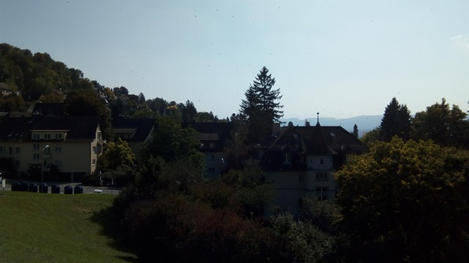

Decided to sleep in after the previous night’s adventure, which meant I had to meet Juyoung et al. in Brunnen rather than taking the train with them. I make myself a good breakfast, sit and read, am chilling and having a great time. Am about to go to Brunnen when I decide it would be a good idea to give Juyoung a ring first to make sure I can reach her (I don’t know her friends).
I give her a call and am answered in rapid Swiss German–it doesn’t take me long to realize that Juyoung has left her phone in the care of some station attendant! So much for Brunnen :P
I instead take an absolutely beautiful walk through the neighborhoods on my side of the river. I don’t know why I have these pics, they’re not representative of how lovely the walk was:
I end up at the top of the hill:

I enter an innocuous-looking, Google-Maps legit path:
Which quickly turns into barely passable jungle! I haul alongside a small stream, dodging logs and swamps and brushing aside branches, for the better part of an hour.
Finally I make it out:
And on my way down am rewarded by seeing this fellow in some sort of big farm/ranch thingy:
Make it back to Culmann by tram and make myself pasta. This is the first time I’ve made myself pasta, and it hasn’t been my friends boiling it for me, isn’t that weird! I get it done and slather it with canned Bolognese and parmesan. It’s decent :)
After that, the rest of the day isn’t very exciting, until:
Swing Dancing!
I read about an upcoming swing dance a while ago, and now, finally, I’m going! Finally find the place, a dance club hidden in a business park. The club is small and beautifully furnished and very lively. It’s DJ’d but I really liked the music! Sit and watch for a bit–actually, many of the dancers there are quite good!
It takes me a little while to warm up get some good dances in, some with experienced folks where I get into the groove, and a few with beginners–after what I suppose was a fairly exhaustive footwork tutorial, a new girl approaches me again “to work on the foot stuff”.
Soon I begin to worry about coughing on fellow dancers, since I’m still a bit sick, and at that point I decide to bail. Head home and crash!